CSS3 渐变（gradient）可以让你在两个或多个指定的颜色之间显示平稳的过渡。 以前，你必须使用图像来实现这些效果，现在通过使用 CSS3 的渐变（gradients）即可实现。此外，渐变效果的元素在放大时看起来效果更好，因为渐变（gradient）是由浏览器生成的。
1、线性渐变
语法：
background: linear-gradient(direction, color-stop1, color-stop2, ...);
说明：
direction：默认为to bottom，即从上向下的渐变；
stop：颜色的分布位置，默认均匀分布，例如有3个颜色，各个颜色的stop均为33.33%。
示例1：to left、top right、to bottom、to top
div { background:linear-gradient(to left, red , blue) }
div { background:linear-gradient(to right, red , blue) }
div { background:linear-gradient(to bottom, red , blue) } /* 浏览器默认值 */
div {
background:linear-gradient(to top, red , blue) }
分别产生“从右到左”、“从左到右”、“从上到下”、“从下到上”的“红色–绿色”渐变
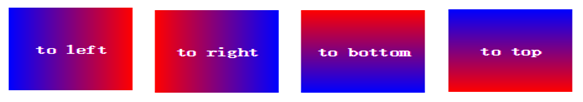
div { background: linear-gradient(to right bottom, red , blue); }
div { background: linear-gradient(to right top, red , blue); }
div { background: linear-gradient(to left bottom, red , blue); }
div { background: linear-gradient(to left top, red , blue); }
分别产生到“右下角”、“右上角”、“左下角”、“左上角”的渐变
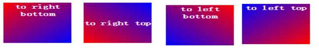
div { background: linear-gradient(10deg, red, blue) }
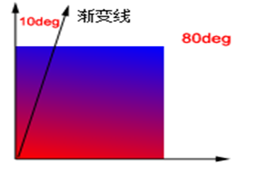
2、径向渐变
径向渐变不同于线性渐变，线性渐变是从“一个方向”向“另一个方向”的颜色渐变，而径向渐变是从“一个点”向四周的颜色渐变
语法：
background: radial-gradient(center, shape, size, start-color, ..., last-color);
说明：
center：渐变起点的位置，可以为百分比，默认是图形的正中心。
shape：渐变的形状，ellipse表示椭圆形，circle表示圆形。默认为ellipse，如果元素形状为正方形的元素，则ellipse和circle显示一样。
size：渐变的大小，即渐变到哪里停止，它有四个值。 closest-side：最近边；
farthest-side：最远边； closest-corner：最近角； farthest-corner：最远角
div { background: radial-gradient(red, green, blue); }
以中心（50% 50%）为起点，到最远角（farthest-corner），从red到green、blue的均匀渐变
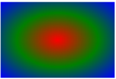
EG:
div { background: -webkit-radial-gradient(50% 50%, farthest-corner, red, green, blue); } 或
div { background: -webkit-radial-gradient(center, farthest-corner, red, green, blue); }
div { background: radial-gradient(red 5%, green 15%, blue 60%); }
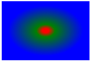
div { background: radial-gradient(circle, red, yellow, green); }
div { background: radial-gradient(ellipse, red, yellow, green); }
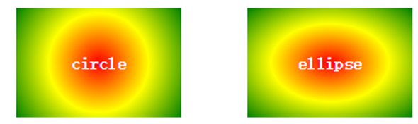
circle：渐变为最大的圆形； ellipse：根据元素形状渐变，元素为正方形是显示效果与circle无异。
size指定了渐变的大小，即渐变到哪里停止，它有四个值。
closest-side：最近边； farthest-side：最远边； closest-corner：最近角；
farthest-corner：最远角
div { background: radial-gradient(60% 40%, closest-side, blue, green, yellow, black); }
div { background: radial-gradient(60% 40%, farthest-side, blue, green, yellow, black); }
div { background: radial-gradient(60% 40%, closest-corner, blue, green, yellow, black); }
div { background: radial-gradient(60% 40%, farthest-corner, blue, green, yellow, black); }
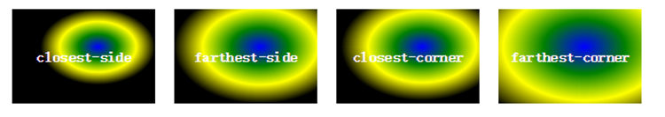
3、重复渐变
div { background: repeating-linear-gradient(red, yellow 10%, green 20%); }
说明：10%的位置为yellow，20%的位置为green，然后按照这20%向下重复
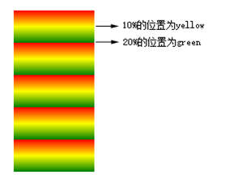
div { background: repeating-radial-gradient(red, yellow 10%, green 20%); }
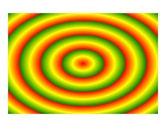
含义：css3的transition允许css的属性值在一定的时间区间内平滑地过渡。这种效果可以在鼠标单击、获得焦点、被点击或对元素任何改变中触发，并圆滑地以动画效果改变CSS的属性值
all======单一属性：transition-property：检索或设置对象中的参与过渡的属性
5s======单一属性：transition-duration：检索或设置对象过渡的持续时间
3s======单一属性：transition-delay：检索或设置对象延迟过渡的时间
linear====单一属性：transition-timing-function：检索或设置对象中过渡的动画类型
简写：
transition:all/具体属性值 运动时间s/ms 延迟时间s/ms 动画类型
transition-timing-function：检索或设置对象中过渡的动画类型
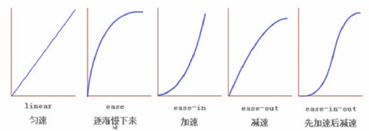
贝塞尔曲线：
属性值：cubic-bezier()
贝塞尔曲线网址：http://cubic-bezier.com/
逐帧动画：transition-timing-function:steps(动画执行的步数);
transform的属性包括：rotate() / skew() / scale() / translate(,) ，分别还有x、y之分，比如：rotatex() 和 rotatey()
将元素向指定的方向移动，类似于position中的relative。
水平移动：向右移动translate(tx,0)和向左移动translate(-tx,0)；
垂直移动：向上移动translate(0,-ty)和向下移动translate(0,ty);
对角移动：右下角移动translate(tx,ty)、右上角移动translate(tx,-ty)、左上角移动translate(-tx,-ty)和左下角移动translate(-tx,ty)。
translateX()：水平方向移动一个对象。对像只向X轴进行移动，如果值为正值，对像向右移动；如果值为负值，对像向左移动。
translateY()：纵轴方向移动一个对象。对象只向Y轴进行移动，如果值为正值，对象向下移动；如果值为负值，对像向上移动。
这两个函数和前面介绍的translate()函数不同的是每个方法只接受一个值。
所以
transform:translate(-100px,0)实际上等于transform:translateX(-100px);
transform:translate(0,-100px)实际上等于transform:translateY(-100px)。
让元素根据中心原点对对象进行缩放。默认的值1。因此0.01到0.99之间的任何值，使一个元素缩小；而任何大于或等于1.01的值，让元素显得更大。
缩放scale()函数和translate()函数的语法非常相似，他可以接受一个值，也可以同时接受两个值，如果只有一个值时，其第二个值默认与第一个值相等。
例如，
scale(1,1)元素不会有任何变化，而scale(2,2)让元素沿X轴和Y轴放大两倍。
scaleX()：相当于scale(sx,1)。表示元素只在X轴（水平方向）缩放元素，其默认值是1。
scaleY()：相当于scale(1,sy)。表示元素只在Y轴（纵横方向）缩放元素，其默认值是１。
旋转rotate()函数通过指定的角度参数对元素根据对象原点指定一个2D旋转。它主要在二维空间内进行操作，接受一个角度值，用来指定旋转的幅度。如果这个值为正值，元素相对原点中心顺时针旋转；如果这个值为负值，元素相对原点中心逆时针旋转。
rotateX() 方法，元素围绕其 X 轴以给定的度数进行旋转
rotateY() 方法，元素围绕其 Y 轴以给定的度数进行旋转
倾斜skew()函数能够让元素倾斜显示。它可以将一个对象以其中心位置围绕着X轴和Y轴按照一定的角度倾斜。
一个参数时：表示水平方向的倾斜角度；
两个参数时：第一个参数表示水平方向的倾斜角度，第二个参数表示垂直方向的倾斜角度
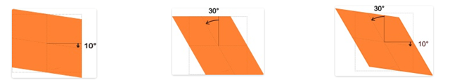
transform-origin是变形原点，也就是该元素围绕着那个点变形或旋转，该属性只有在设置了transform属性的时候起作用；
因为我们元素默认基点就是其中心位置，换句话说我们没有使用transform-origin改变元素基点位置的情况下，transform进行的rotate,translate,scale,skew等操作都是以元素自己中心位置进行变化的。
2D 转换元素能够改变元素 x 和 y 轴